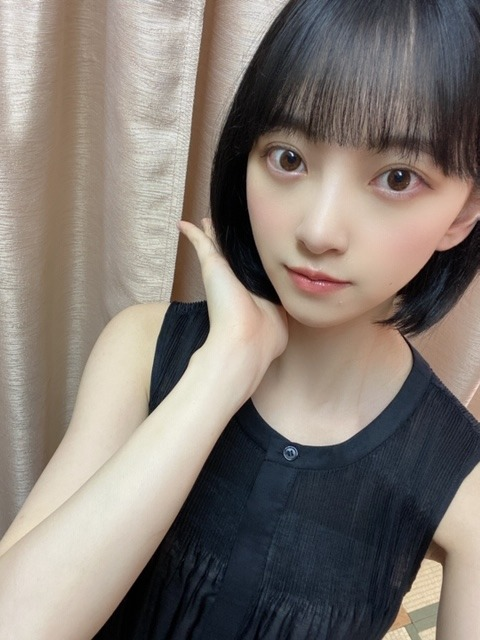
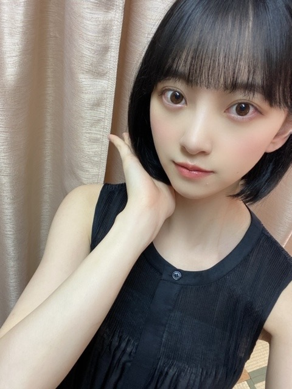

2020/0701Wed変わる不思議
7月ですね
nico touches the wallsさんの
夏の大三角形
がわたしの定番のナツウタです
夏かあ
今はまだ梅雨ですよね
雨の日は天気の子を観る決まりなのですが
天気の子を観過ぎてセリフ覚えてきました☺︎




昨日このワンピース着ていたら
絢音が似合うねって褒めてくれました
髪やメイクや服の少しの変化にも気付いてくれるので
嬉しいんですいつも。
朝ごはんは大好きなとうもろこしです
美味しいとうもろこしと桃を
この夏は追い求めたいとおもいます
では！☺︎
7月ですね
nico touches the wallsさんの
夏の大三角形
がわたしの定番のナツウタです
夏かあ
今はまだ梅雨ですよね
雨の日は天気の子を観る決まりなのですが
天気の子を観過ぎてセリフ覚えてきました☺︎

昨日このワンピース着ていたら
絢音が似合うねって褒めてくれました
髪やメイクや服の少しの変化にも気付いてくれるので
嬉しいんですいつも。
朝ごはんは大好きなとうもろこしです
美味しいとうもろこしと桃を
この夏は追い求めたいとおもいます
では！☺︎
2020/07/01 11:50
コメント(334)
黒髪ボブ可愛すぎてびっくり笑
活動頑張ってください、応援してます。
活動頑張ってください、応援してます。
かわよい
やっぱ未央奈はショートだよな
可愛ｲｲｲｲｲｲｲｲｲｲｲｲ
可愛ｲｲｲｲｲｲｲｲｲｲｲｲ
可愛い！
ボブ可愛い！！
私もショートにするか悩んでいるので、ショートのアレンジをたくさん載せて欲しいです！
私もショートにするか悩んでいるので、ショートのアレンジをたくさん載せて欲しいです！
お疲れsummerです。
7月と言われればそうなのかもしれません。
僕は7月をあまり気にしない人なんですよ。
僕の中で6月〜10月初旬までが夏という
強い意識があるからですかね。
Tシャツ、短パンで寝るのキツくなって
きたな〜という所までが夏なので
日本の夏は半年近くある計算です。
夏の大三角形聴きました。
確かに…という感じ。10月末まで
いけるかもしれません。
今日も天気の子を観るという事なのかな。
と思ったら今通知で違うの観るって出た。笑
少し前に天気の子のマンガ 2巻が電子書籍
で出たんですよ。映画よりちょっと詳しい
描写があるので面白いですよ。
興味があったら是非という事で。
では。☺︎☺︎
7月と言われればそうなのかもしれません。
僕は7月をあまり気にしない人なんですよ。
僕の中で6月〜10月初旬までが夏という
強い意識があるからですかね。
Tシャツ、短パンで寝るのキツくなって
きたな〜という所までが夏なので
日本の夏は半年近くある計算です。
夏の大三角形聴きました。
確かに…という感じ。10月末まで
いけるかもしれません。
今日も天気の子を観るという事なのかな。
と思ったら今通知で違うの観るって出た。笑
少し前に天気の子のマンガ 2巻が電子書籍
で出たんですよ。映画よりちょっと詳しい
描写があるので面白いですよ。
興味があったら是非という事で。
では。☺︎☺︎
未央奈ちゃんの黒髪ボブ可愛すぎるよ〜〜！
46時間TVのときの、ロングのポニーテールも好き！！
色んな自分に出会う、ってインスタの質問返しだったかな？で言ってたけど凄く素敵なことだと思う！私も色んな未央奈ちゃんが見たいです٩(๑❛ᴗ❛๑)۶
46時間TVのときの、ロングのポニーテールも好き！！
色んな自分に出会う、ってインスタの質問返しだったかな？で言ってたけど凄く素敵なことだと思う！私も色んな未央奈ちゃんが見たいです٩(๑❛ᴗ❛๑)۶
黒髪ショートヘアのANGEL
やっぱり、髪が短い方が
未央奈の顔の美しさが映えるね♪
大好きです。
『かき氷の片想い』☆
やっぱり、髪が短い方が
未央奈の顔の美しさが映えるね♪
大好きです。
『かき氷の片想い』☆
ショートがよく似合ってますねd(>∇<；)
今日の堀ちゃんね。
自然な感じでとっても好きです
凄く良い感じです。
今までの中で降星の知ってる堀ちゃんのイメージに
一番近いなあ。
自然な感じでとっても好きです
凄く良い感じです。
今までの中で降星の知ってる堀ちゃんのイメージに
一番近いなあ。
やっぱ未央奈ちゃんはボブですなぁ。
最高です！！
未央奈ちゃんも友達の容姿の変化にすぐ気づくタイプですか？
最高です！！
未央奈ちゃんも友達の容姿の変化にすぐ気づくタイプですか？
更新ありがとう❤
黒髪と黒のワンピース似合っててかわいい～❤
カップスターの動画見ました。
未央奈ちゃん探偵みたいでかっこよかったです。
未央奈探偵ですね。
動画の未央奈ちゃんは黒髪ロングでした。
ロングもショートもかわいい～❤❤❤❤❤❤❤❤❤❤❤❤❤❤❤❤❤❤❤❤❤❤❤❤❤❤❤❤❤❤❤❤❤❤❤❤❤❤
黒髪と黒のワンピース似合っててかわいい～❤
カップスターの動画見ました。
未央奈ちゃん探偵みたいでかっこよかったです。
未央奈探偵ですね。
動画の未央奈ちゃんは黒髪ロングでした。
ロングもショートもかわいい～❤❤❤❤❤❤❤❤❤❤❤❤❤❤❤❤❤❤❤❤❤❤❤❤❤❤❤❤❤❤❤❤❤❤❤❤❤❤
ボブ未央奈可愛すぎる！！
憧れちゃいます。
とっても応援してます！
大大大大大好き(o^^o)
憧れちゃいます。
とっても応援してます！
大大大大大好き(o^^o)
あんなに長かった髪をバッサリいきましたね( ・∇・) なにかしら始まろうとしているのかなｧ～(о´∀`о)
堀ちゃんの気合いの表れなのかな⁉ねずみ年もあと半期ですよ(*´-`) やれることが制限されているけど、堀ちゃんにとって大切な一年にしてください❗＼(^o^)／(*^▽^)/★*☆♪
堀ちゃんの気合いの表れなのかな⁉ねずみ年もあと半期ですよ(*´-`) やれることが制限されているけど、堀ちゃんにとって大切な一年にしてください❗＼(^o^)／(*^▽^)/★*☆♪
カワイイ
だいすき
だいすき
未央奈さん
毎日自粛お疲れ様です！
未央奈さん
髪の毛切られたんですね
ショートボブですね
凄く似合っていて
僕は好きです
これから暑い日が来るから
髪の毛切って涼しくなっていいと思います！
未央奈さん
まだまだお会いできない日が続きますが
会える日を楽しみにしています！
その日までお互い頑張って行きましょう
さっしーより。
毎日自粛お疲れ様です！
未央奈さん
髪の毛切られたんですね
ショートボブですね
凄く似合っていて
僕は好きです
これから暑い日が来るから
髪の毛切って涼しくなっていいと思います！
未央奈さん
まだまだお会いできない日が続きますが
会える日を楽しみにしています！
その日までお互い頑張って行きましょう
さっしーより。
未央奈ちゃんこんばんは!未央奈ちゃんはやっぱりボブが１番似合う!私は今日46歳になりました。
先ほど野菜ソムリエのいる店の夜ごはんのサラダに
入っていた「とうもろこし」が、めちゃ美味しかったです。
入っていた「とうもろこし」が、めちゃ美味しかったです。
こんばんは♡
7月になりましたね～♪
まだ梅雨の真っ最中ですが、
夏を想うとワクワクします✨
ナツウタにもウキウキしますよ～
天気の子も季節に合いますよね☆
ワンピース姿は夏らしく爽やかです！
黒髪ボブはイメージにピッタリです✌
とうもろこし食べても夏を感じますね！
今日は凄く甘い初桃を食べましたよ♡☺
7月になりましたね～♪
まだ梅雨の真っ最中ですが、
夏を想うとワクワクします✨
ナツウタにもウキウキしますよ～
天気の子も季節に合いますよね☆
ワンピース姿は夏らしく爽やかです！
黒髪ボブはイメージにピッタリです✌
とうもろこし食べても夏を感じますね！
今日は凄く甘い初桃を食べましたよ♡☺
未央ちゃんブログ更新有り難うございます。
髪、似合っていると思いますよ。未央ちゃん頑張ってね。
髪、似合っていると思いますよ。未央ちゃん頑張ってね。
とおりゃ（っ'-')╮ =͟͟͞͞ ☺︎ﾌﾞｫﾝ
ナツウタといえばSTRAIGHTENERのシーグラスを聴いてみて欲しいな
未央奈ちゃん♡♡
更新ありがとうございます^^*
ボブ未央奈ちゃん可愛すぎますね❤！
天使…尊いです(´；ω；｀)
未央奈ちゃんも、暑さに負けず頑張ってくださいね！
ではまた！
未央奈ちゃん大好きです♡♡
更新ありがとうございます^^*
ボブ未央奈ちゃん可愛すぎますね❤！
天使…尊いです(´；ω；｀)
未央奈ちゃんも、暑さに負けず頑張ってくださいね！
ではまた！
未央奈ちゃん大好きです♡♡
とにかくすき
やばい推し変しそう
ニコタチ俺も好き!
髪型これよ!!
これが好きなんです!
髪型これよ!!
これが好きなんです!
みおな、こんばんは。
やっぱり、黒服のショートは可愛いね。一番似合っているよ。
夏の大三角形といえば、有名な星達で構成されていますが、それぞれ何という星か知ってますか？
やっぱり、黒服のショートは可愛いね。一番似合っているよ。
夏の大三角形といえば、有名な星達で構成されていますが、それぞれ何という星か知ってますか？
みおな、こんばんは！更新ありがとう。 近況報告ありがとうございます。では、毎日みおなに良いこと沢山ありますように！ おやすみおな！！
ショートボブが最もよく似合うアイドル「堀未央奈」に感謝！
こんにちは‼︎
ブログ更新、ありがとうございます♪
黒髪ボブにしたんですね‼︎
めっちゃ嬉しい‼︎
もう、本当に可愛いです。
ショート好きの自分にとっては、どストライクです(笑)。
季節的にも、さっぱりと夏らしくて、とってもいい♪
ノースリーブのワンピースとの相性も抜群ですね‼︎
そうそう、夏といえば…
『夏の大三角形』、いい曲ですよね♪
nico touches the wallsさんは、どの曲も青春ど真ん中って感じ。
『手をたたけ』とか『天地ガエシ』とか、よく聴いたなあ。
本格的な夏の到来にはもう少し待たないといけないけど、ちょっとスーパーを覗くと、既に桃が店頭に並んでますね‼︎
先週ちょっと見かけたんだけど、まだちょっと早いかなあと思って、買うのを躊躇してしまった(笑)。
桃ってそれなりにいい値段するから、買って美味しくないと結構ショックなんですよね(苦笑)。
フルーツって、食べ頃を見定めるのが難しい‼︎
特に桃は足が早いから、待ち過ぎてもダメだし。
う〜ん、桃マスターになりたい‼︎(笑)
夏といえば、スイカやナス、カツオも美味しいですよね〜
そして、旬という訳ではないけど、夏はビールが美味しい‼︎(笑)
いろいろと大変な時期だけど、せめて食事だけでも楽しんで、なんとか乗り切りたいですね♪
ではでは、また。
明日も未央奈にとっていい1日になりますように♪
ブログ更新、ありがとうございます♪
黒髪ボブにしたんですね‼︎
めっちゃ嬉しい‼︎
もう、本当に可愛いです。
ショート好きの自分にとっては、どストライクです(笑)。
季節的にも、さっぱりと夏らしくて、とってもいい♪
ノースリーブのワンピースとの相性も抜群ですね‼︎
そうそう、夏といえば…
『夏の大三角形』、いい曲ですよね♪
nico touches the wallsさんは、どの曲も青春ど真ん中って感じ。
『手をたたけ』とか『天地ガエシ』とか、よく聴いたなあ。
本格的な夏の到来にはもう少し待たないといけないけど、ちょっとスーパーを覗くと、既に桃が店頭に並んでますね‼︎
先週ちょっと見かけたんだけど、まだちょっと早いかなあと思って、買うのを躊躇してしまった(笑)。
桃ってそれなりにいい値段するから、買って美味しくないと結構ショックなんですよね(苦笑)。
フルーツって、食べ頃を見定めるのが難しい‼︎
特に桃は足が早いから、待ち過ぎてもダメだし。
う〜ん、桃マスターになりたい‼︎(笑)
夏といえば、スイカやナス、カツオも美味しいですよね〜
そして、旬という訳ではないけど、夏はビールが美味しい‼︎(笑)
いろいろと大変な時期だけど、せめて食事だけでも楽しんで、なんとか乗り切りたいですね♪
ではでは、また。
明日も未央奈にとっていい1日になりますように♪
やっぱり未央奈ちゃんは、黒髪ボブが似合いますねー！
夏の第三角形、懐かしいなぁ♪☆
夏の第三角形、懐かしいなぁ♪☆
おっちゃんはバターコーン ビール に合うのよぬ〜♪♪♪
ただただかわいい。
未央奈ブログ更新ありがとう！
黒髪ボブ未央奈最高に似合ってて可愛いー！
黒髪ボブ未央奈最高に似合ってて可愛いー！
やっぱこの長さだわ
チャァオ～～!☆彡
梅干し大好き、みおちゃん❕笑
うちのベランダの半日陰に置いてある～～⤴️⤴️
紅梅に、まだ実がついたままです❕❤️❤️❤️❤️❤️笑
落ちづに、幾つも大玉になっていますのでぇ
梅干し作りが楽しみです❕❤️❤️❤️❤️❤️笑❇️❇️❇️
(めちゃめちゃ塩分最強に作りますので❕笑)
❇️❇️おすまし！⚜️❇️⭐彡
札幌も最近雨続きで、晴れ間が少ないですね。。
桃だったら、岡山か福島か。。
(゜゜)
未央奈ちゃん、ボブかわいいです。
そう言えば、和ラーの乃木坂ちゃん浴衣バージョンが出てたので、未央奈ちゃんのこの前買いましたよ。
桃だったら、岡山か福島か。。
(゜゜)
未央奈ちゃん、ボブかわいいです。
そう言えば、和ラーの乃木坂ちゃん浴衣バージョンが出てたので、未央奈ちゃんのこの前買いましたよ。
未央奈さんのボブ可愛い!
堀未央奈❤こんばんは❗俺は、この歌手の人知らないよ。
雨の日には天気の子観ているんだね☺毎日観ていると台詞覚えるよね☺
でも同じの観て飽きないのかな？好きなんだね(^-^)v
このワンピース未央奈似合ってるね(*^^*)可愛いよ(*^^*)
今日も、未央奈の事愛してる ♥❤
今日から、７月だよ。早いよね☺
これからも体調に気を付けて頑張ってね(*^^*)応援しているからね☺
雨の日には天気の子観ているんだね☺毎日観ていると台詞覚えるよね☺
でも同じの観て飽きないのかな？好きなんだね(^-^)v
このワンピース未央奈似合ってるね(*^^*)可愛いよ(*^^*)
今日も、未央奈の事愛してる ♥❤
今日から、７月だよ。早いよね☺
これからも体調に気を付けて頑張ってね(*^^*)応援しているからね☺
こんばんみーお♪
ブログありがとう♪
おかえり！ボブミオナ〜
夏の到来を予感させるね〜♪
ワンピース？も全体を見たいなぁ〜
ところで(心太)、
鍵泥棒のメソッド
ワシも好きな映画だよ〜
ってか、以前薦めた事があるような。。。笑
ワシは既に、2回は観ているよん♪
設定(シナリオ)も演技も秀逸な映画だよね〜
また、観たくなってきたなぁ〜
でも、今は、愛の不時着がクライマックスに
差し掛かっているんで、頭の中は
ハングル語が巡っているよ〜笑
では、今宵も不時着してくるね〜
ばなな！
わたる⊿
ブログありがとう♪
おかえり！ボブミオナ〜
夏の到来を予感させるね〜♪
ワンピース？も全体を見たいなぁ〜
ところで(心太)、
鍵泥棒のメソッド
ワシも好きな映画だよ〜
ってか、以前薦めた事があるような。。。笑
ワシは既に、2回は観ているよん♪
設定(シナリオ)も演技も秀逸な映画だよね〜
また、観たくなってきたなぁ〜
でも、今は、愛の不時着がクライマックスに
差し掛かっているんで、頭の中は
ハングル語が巡っているよ〜笑
では、今宵も不時着してくるね〜
ばなな！
わたる⊿
みおなちゃん♥
髪、ショートにしたんだね。
かわいい❗❗
今日から7月。
ワンピース、絢音さんからほめて
いただいて、素敵ですね。♥
眠くないですか？
いつも、モバメ、インスタ、ありがとう❗❗
元気がでますよ。♥
髪、ショートにしたんだね。
かわいい❗❗
今日から7月。
ワンピース、絢音さんからほめて
いただいて、素敵ですね。♥
眠くないですか？
いつも、モバメ、インスタ、ありがとう❗❗
元気がでますよ。♥
今回もめっちゃ可愛い！
ショートにしたんだね！
ショートにしたんだね！
ブログ更新ありがとうございます！
写真どれも可愛すぎます！
7月もよろしくお願いします！
写真どれも可愛すぎます！
7月もよろしくお願いします！
未央奈！
ペンネーム的なのに変えてみたよ！よろしくね！
ボブ未央奈、めちゃ可愛い！
ずっと好きだったけど、ますます好きになりました。
いつも元気を分けてくれてありがとう！
では
ペンネーム的なのに変えてみたよ！よろしくね！
ボブ未央奈、めちゃ可愛い！
ずっと好きだったけど、ますます好きになりました。
いつも元気を分けてくれてありがとう！
では
こんばんはお疲れさま☺
久しぶりです堀ちゃん☺
黒髪ボブショート似合ってます☺
黒いワンピース大人な感じで
日傘さして海辺にいたら
ジブリのワンシーンみたい
って勝手に想像してまったよ～✨
うん、似合ってます☺
夏本番やね。
まだ梅雨やけどね。
もう少しはおうち生活続くかもやけど
無理なく楽しく過ごしてね☺
トウモロコシ俺も好きやで(笑)☺
果物も良いな✨
桃もスイカもメロンも好きです☺
っていうか前にも書いたけど基本好き嫌いないから(笑)
ではではまたね。
ほなね、堀ちゃん☺
久しぶりです堀ちゃん☺
黒髪ボブショート似合ってます☺
黒いワンピース大人な感じで
日傘さして海辺にいたら
ジブリのワンシーンみたい
って勝手に想像してまったよ～✨
うん、似合ってます☺
夏本番やね。
まだ梅雨やけどね。
もう少しはおうち生活続くかもやけど
無理なく楽しく過ごしてね☺
トウモロコシ俺も好きやで(笑)☺
果物も良いな✨
桃もスイカもメロンも好きです☺
っていうか前にも書いたけど基本好き嫌いないから(笑)
ではではまたね。
ほなね、堀ちゃん☺
未央奈ちゃん、ショートヘアーに戻しちゃった
んだね！ ロングヘアーにする前にしてたショートヘアー
とは何となく印象が違う感じがするけど、とても
綺麗だよ
同じ2期生の鈴木絢音ちゃんに黒ワンピを褒められて
良かったね
俺も実際にみたら鈴木絢音ちゃんのように同じく
褒めちゃうかな
ともうもろこしは俺も好きだよ！
食べるときはまるごと茹でて指で数粒取りながら
食べるよ！
では
んだね！ ロングヘアーにする前にしてたショートヘアー
とは何となく印象が違う感じがするけど、とても
綺麗だよ
同じ2期生の鈴木絢音ちゃんに黒ワンピを褒められて
良かったね
俺も実際にみたら鈴木絢音ちゃんのように同じく
褒めちゃうかな
ともうもろこしは俺も好きだよ！
食べるときはまるごと茹でて指で数粒取りながら
食べるよ！
では
黒い堀未央奈もい、い、も、ん、で、す、ね
こんばんわん
ブログ更新ありがと！
久しぶりにショート見た
可愛い
私もまたショートしようかな
(単純な奴)
そろそろ就活を本格化しないといけないのに、やる気が起きません。。
どうしたらいいですか？
こんなこと言われても困っちゃうよね笑
頑張ります
ではまた(*´▽｀*)
ブログ更新ありがと！
久しぶりにショート見た
可愛い
私もまたショートしようかな
(単純な奴)
そろそろ就活を本格化しないといけないのに、やる気が起きません。。
どうしたらいいですか？
こんなこと言われても困っちゃうよね笑
頑張ります
ではまた(*´▽｀*)
こんばんは、未央奈ちゃん。
いやいやいや、ボブ可愛い過ぎます。
これは反則ですね。
熱が出ちゃいそう笑
いやいやいや、ボブ可愛い過ぎます。
これは反則ですね。
熱が出ちゃいそう笑


だいすきだ